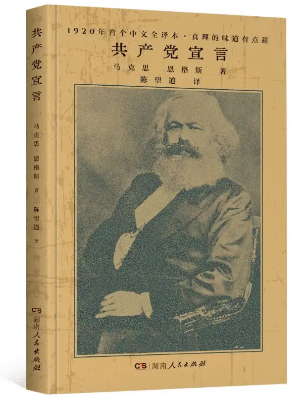

共产党宣言
卡尔·马克思 14914字
《共产党宣言》（又译《共产主义宣言》）是卡尔·马克思和弗里德里希·恩格斯为共产主义者同盟起草的纲领，
全文贯穿马克思主义的历史观 ，它是马克思主义诞生的重要标志。
宣言第一次全面系统阐述科学社会主义理论，指出共产主义运动将成为不可抗拒的历史潮流。
卡尔·马克思 14914字
《共产党宣言》（又译《共产主义宣言》）是卡尔·马克思和弗里德里希·恩格斯为共产主义者同盟起草的纲领，
全文贯穿马克思主义的历史观 ，它是马克思主义诞生的重要标志。
宣言第一次全面系统阐述科学社会主义理论，指出共产主义运动将成为不可抗拒的历史潮流。